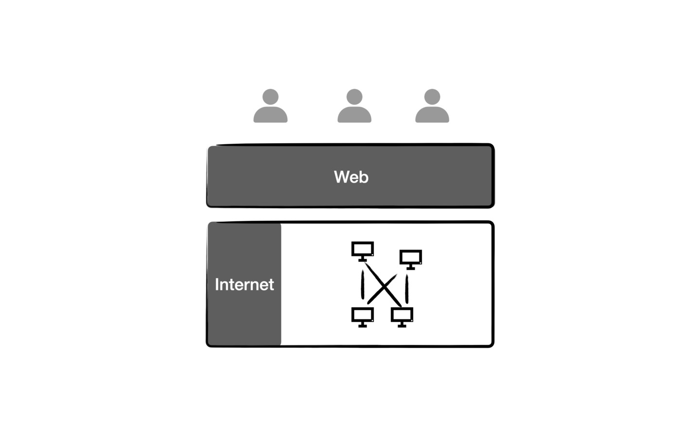

本书要聊的是 Web3.0 的架构，所以首先需要定义清楚什么是 Web3.0 ，因为多年来每个人给出的定义都不相同。这里给出本书中的定义，这也决定的本书的主线和对各个相关技术点的取舍。
区块链为基础的互联网
先来定义一下什么是 Web 。中文世界中我们经常把 Web 和 Internet 都叫做互联网，本书中我们也不做严格区分。但是实际上从技术上讲，二者是不同的两个概念。Internet 首先出现，是用 TCP/IP 协议连接起来的全球计算机组成的网络，可以认为 Internet 是今天我们使用的各种网站 App 或者移动 App 运行的底层基础。而 Web 是运行在 Internet 之上的一种服务，是人们使用 Internet 的最常见的方式。狭义的 Web 技术包括 HTTP/HTML 等等，都跟浏览器紧密相关，本书中的 Web 涵盖的范围更宽泛，例如作为 Web3.0 关键组件的区块链，明显不属于传统意义上的 Web 技术，但是在我们这里也认为 Web3.0 技术栈的一个组成部分。

有人说 Web3.0 是与 AI 和物联网结合的互联网，也有人说语义网才是 Web3.0 ，各种说法都有自己的道理。但是本书的观点认为，基于区块链的 Web 才是 Web3.0 。至于区块链给互联网带来了什么？为何必须要有区块链才能解决 Web2.0 的各种问题，书中会有答案。
以“数据确权”核心目标的互联网
即使在区块链领域，大家对 Web3.0 的定义也有不同的说法，有人说 Web3.0 是”去中心化“的互联网，也有人说是”可信“互联网。本书认为，以上说法都是技术手段，本书的主线要围绕 Web3.0 的核心目标来展开，那就是“数据确权”。所谓“数据确权”，就是把数据视为一种资产，并让用户拥有自己数据的产权。数据确权的目的，是让自由的数据市场形成，解决当前 Web2.0 的隐私泄露，数据孤岛和巨头垄断等各种问题。
图-前言-2
本书给出的 Web3.0 的定义是：Web3.0 是要实现”数据确权“的互联网。Web3.0 肯定是要去中心化的，也就是要摆脱对互联网巨头的依赖。同时没有了中心化组织提供的信任，互联网自身也必须在协议层实现”可信“。所以”去中心化“和“可信”实际上是一体的，同时，二者也都是实现“数据确权”的必要技术手段。但是如果把“去中心化”作为基本设计原则，就会发现设计出来的 Web3.0 是根本无法落地的。科技以人为本，本书认为，是不是完全的“去中心化”不重要，重要的是解决目前”数据确权“的问题。明确这一点，我们在设计的 Web3.0 架构的时候才能清楚的知道各种技术细节的应该如何取舍，也才能真正给出一套可以落地的技术架构。
要解决 Web2.0 痛点的互联网
Web2.0 有哪些痛点？”数据确权“后是不是可以解决这些痛点？
第一个是用户不能售卖数据获得收益。互联网巨头的软件为何都是免费的呢？因为他们可以通过持有我们的数据来赚钱。但是用户才是数据的生成者和所有者，用户应该有权力售卖自己的数据。这个是 Web3.0 要解决的最关键的问题。也是大家认为 Web3.0 一定会到来的底层驱动力。因为未来数据会越来越值钱，如果你的数据有一天比自己的房子和汽车都要值钱，那么你还会把它交给互联网公司吗？但是，这里有很多技术难点要解决。因为数据之所以值钱，很多时候是是因为数据的一些相关属性，例如一句话是谁，在什么时间，什么地点说的。例如，我在一年前大众点评网上的一个评论，是有一定价值的。但是如果没有大众点评这个平台的信用做背书，而是去中心化把数据存储到自己手里，那么很难证明这个评论不是我自己捏造的，所以，如何在去中心化的同时，让互联网自身变得可信，能够保留住数据的这些属性，是本书要解决的一个技术问题。
第二个是打破巨头垄断问题。Web2.0 是能够支撑经济活动的，但是必须依托平台型互联网巨头来实现。巨头可以提供经济活动所必须的珍贵的信任，但会造成马太效应，强者恒强。数据聚集在巨头手中，形成了很强的垄断。谷歌曾经的口号是”不作恶“( Don't be evil )，但是 Web3.0 要实现的是让巨头”没有能力作恶“（ Can not be evil ）。而如果数据确权到用户手中，App 和数据是分离的，用户可以自由的切换应用。巨头也不占有数据，那么创业公司就可以跟巨头一样靠优质的服务，去争夺用户。那么 App 和数据分离的架构是怎样的呢？如果有创业者开发了一个功能我更喜欢的聊天应用，我真的可以把我的微信数据，包括好友连接，公众号粉丝，都一起迁移到应用中吗？本书中会给出答案。
第三是隐私。最近几年，隐私泄露问题越来越严重，社交巨头 Facebook 的 CEO 扎克伯克去参加相关的听证会也成了家常便饭，不再是新闻了。这样造成的后果是非常严重的，首先对用户的伤害是直接的，隐私泄露会给个人带来不便甚至是危险。另外，对互联网公司来讲，面对监管压力，他们也会在使用数据的时候畏首畏尾，例如，2019年初，扎克博格就宣布，对 Facebook 的几款应用的数据进行端到端的加密，也就是说只有用户自己能解密看到这些信息，而 Facebook 是没有办法拿到这些数据的。虽然保护了隐私，但是也影响了数据作为一种资产的价值。如果能让用户安全的持有自己的数据，享有数字产权，这样可以更有效的促进数字市场的形成。
最后一点是解决价值流动问题。Web2.0 虽然对经济影响巨大，但是仔细观察却发现其实只是实体经济的入口，因为互联网没有原生的货币，交易一旦要经过政府发行的法币来进行，就必然跟肉身世界发生强关联，另外，Web2.0 是不能保存不可篡改的数据的，数据都是保存在某个公司的数据库中，不能作为经济活动运行所依赖的事实依据。而 Web3.0 的终极目标是创建“去中心化经济”，也有人叫做”加密经济“。”去中心化经济“是在数字空间独立运行的经济，基础是，区块链带来的价值流动（加密货币）和事实依据（不可篡改数据）。
一个理解区块链的新角度
区块链的书市面上已经很多了，本书的特点是选择了一个理解区块链价值的新角度。目前常见的角度有两个：第一个是比特币代表的非主权货币，第二个是以太坊为代表的智能合约。坦率的说，这两个角度的对很多人是没有说服力的，因为支持的理由中主观因素强。比特币的世界货币思想，自由主义者视若珍宝，但是持有其他政治主张的人是不太能接受的。以以太坊为代表的智能合约思想，未来主义色彩比较强，技术上的可行性还在讨论中，其中主要的一点是区块链能否海量并且快速的承载数据的运算和存储。而本书的 Web3.0 思想，是可以从一个不带政治主张的角度，给出一个技术上可行的区块链落地方案，并且是实实在在的去解决 Web2.0 已有的痛点，读者只要能看完本书，是能够客观的意识到区块链扮演的技术上的角色。
适合读者
虽然介绍的是 Web3.0 的技术体系。但是书中的术语和区块链背景知识会做简明的讲解，保证没有技术背景的读者也完全可以理解。
准备投资区块链的同学可以从本书去获得一种客观理解，区块链能做什么不能做什么。程序员同学可以找到一种切入区块链和下一代 Web 开发的正确角度。尤其对于有 Web2.0 开发基础的同学，本书内容会更为亲切。